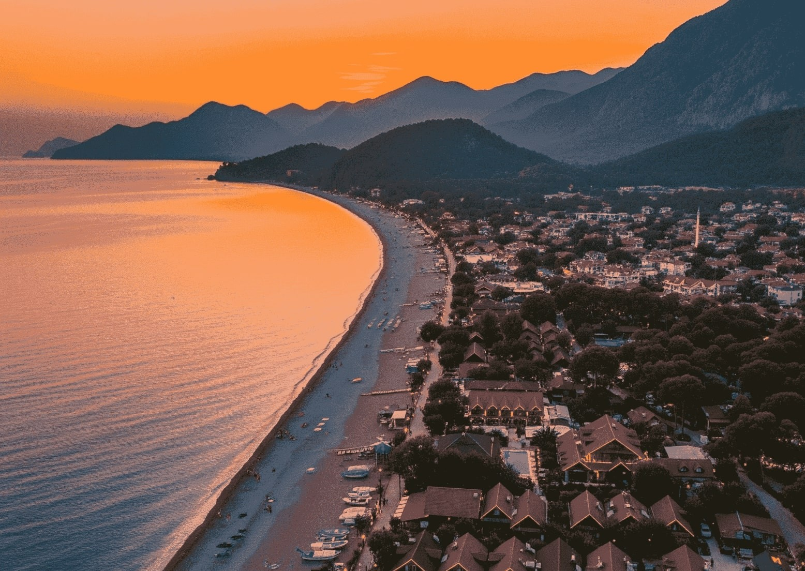

Türkiye'nin güney kıyısında, Toros dağlarının denize kavuştuğu noktada küçük bir vadi uzanır. Çıralı, 1990'lardan bu yana kıyı koruma statüsüyle güvence altına alınmış, yapılaşmanın sınırlandırıldığı nadir yerleşimlerden biridir; bu yüzden burada yüksek oteller, beton rıhtımlar ya da kalabalık sahil şeritleri göremezsiniz. 3,5 kilometre uzunluğundaki plaj, Caretta caretta deniz kaplumbağaları için her yıl yuvalamanın sürdüğü alan olarak uluslararası koruma statüsü taşımaktadır.
Çıralı'nın arka planı, yerleşim kadar eskidir. MÖ 2. yüzyılda kurulmuş Antik Olympos kenti, otelin hemen bitişiğinde, Likya Birliği'nin önemli liman şehirlerinden biriydi; bugün Roma dönemi mezarları ve tiyatro kalıntıları vadinin içine karışmış durumdadır. Birkaç kilometre ötede, Yanartaş'ta yeraltından sızan doğal gazın 2.500 yıldır yakıp tuttuğu alevler Homeros'un Chimaera efsanesine ilham kaynağı olmuştur. Çıralı, mitoloji, tarih ve doğanın bu kadar iç içe geçtiği ender yerlerden biridir.
Haziran'da günler uzar, deniz ısınır ve zaman farklı akmaya başlar. Çıralı'da sabahlar erken, sessiz ve parlaktır. Sis vadiden çekilirken sahil boştur; ilk yüzüş yalnızca sizindir. Öğle sıcağı bahçeye çöktüğünde çardak altında kitap okunur, hamakta uyunur — bir sonraki saate dair hiçbir plan yoktur.
Akşam yavaş gelir. Güneş Tahtalı'nın ardına düşerken deniz renk değiştirir. Ateş yakılır, sohbet açılır. Burada Akdeniz'i hissetmek için denize girmek şart değil; sadece oturmak, dinlemek yeterlidir. Bir yazı bu kadar tam kılan başka pek az yer vardır.

Yaklaşık 3,5 kilometre uzunluğunda, ince çakıl ve kumdan oluşan el değmemiş bir Akdeniz kıyısı. Kıyı şeridinin tamamı doğal sit alanı; oteller ve restoranlar beachfront'a inşa edilemez. Her yıl Mayıs'tan Ekim'e kadar Caretta caretta deniz kaplumbağaları bu plajda yumurtalar.

Lodge'un ismini aldığı antik kent, otelin hemen bitişiğindedir; bahçeden çıkıp on dakika yürüdüğünüzde Likya'nın en iyi korunmuş kentlerinden birinin içindesinizdir. Roma döneminden kalma mezarlar, tiyatro kalıntıları ve denize uzanan surlar.

Yeraltından sızan doğal gazın yüzeyde tutuşmasıyla oluşan, 2.500 yıldır kesintisiz yanan alevler. Mitolojide Chimaera canavarının nefesidir. Gece yürüyüşü önerilir; karanlıkta kayalar arasından çıkan alevler zaman kavramını askıya alır.

The Sunday Times'ın dünyanın en iyi on yürüyüş rotasından biri seçtiği 540 kilometrelik patika, Çıralı'dan geçer. Antik kentler, Likya mezarları, ıssız koylar ve dağ köyleri birbirini izler. Çıralı bölümü Olympos–Adrasan hattını kapsar.
Bazı yerler sizi değiştirmez. Sadece kendinizi hatırlatır.
Olympos koyları, Adrasan ve çevre adacıklar arasında günübirlik mavi tur. Berrak sularda yüzme molaları, ıssız koy sığınakları, açık denizin sessizliği.
Caretta caretta plajında Akdeniz'in berrak sularında yüzme. Şnorkel ekipmanı otel tarafından sağlanır.
Konaklayan misafirlere kano ve SUP (stand-up paddleboard) kullanımı ücretsiz olarak sunulur.
Mevsimsel olarak üçüncü taraf operatör aracılığıyla düzenlenir. Detaylar resepsiyondan alınabilir.
Konaklayan misafirlere bisiklet ücretsiz sunulur. Çıralı vadisi boyunca ideal güzergahlar mevcuttur.
2.365 metre zirveye çıkış. Akdeniz'in ve Çıralı vadisinin kuş bakışı panoramik görünümü. Dünyanın en uzun tek geçişli teleferiklerinden biri.


Dağ kaynağından beslenen çay restoranları. Alabalık ve doğal serinlik.
2.365 metre zirveye çıkış. Akdeniz, Çıralı ve Kemer'in panoramik görünümü.
Üç limanıyla eşsiz konumda Likya-Roma kenti. Denize uzanan kalıntılar arasında yüzmek mümkün.
Pazarlar, eczaneler, bankalar ve marina için en yakın ilçe merkezi.
Tarihi Kaleiçi, müzeler ve uluslararası uçuşlar için Antalya Havalimanı (AYT).
Çıralı; plajıyla, harabeleriyle, alevleriyle ve korunan sessizliğiyle, Türkiye'de başka yerde bulunması giderek zorlaşan bir şeydir.